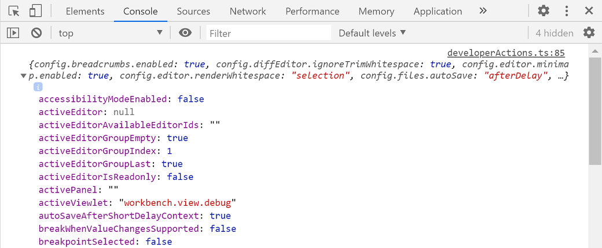

when clause contexts
Visual Studio Code sets various context keys and specific values depending on what elements are visible and active in the VS Code UI. These contexts can be used to selectively enable or disable extension commands and UI elements, such as menus and views.
For example, VS Code uses when clauses to enable or disable command keybindings, which you can see in the Default Keybindings JSON (Preferences: Open Default Keyboard Shortcuts (JSON)):
{ "key": "f5", "command": "workbench.action.debug.start",
"when": "debuggersAvailable && !inDebugMode" },
Above the built-in Start Debugging command has the keyboard shortcut F5, which is only enabled when there is an appropriate debugger available (context debuggersAvailable is true) and the editor isn't in debug mode (context inDebugMode is false).
Conditional operators
For conditional expressions, you can use the following conditional operators:
| Operator | Symbol | Example |
|---|---|---|
| Equality | == |
"editorLangId == typescript" |
| Inequality | != |
"resourceExtname != .js" |
| Or | || |
"isLinux||isWindows" |
| And | && |
"textInputFocus && !editorReadonly" |
| Not | ! |
!editorReadonly |
| Matches | =~ |
"resourceScheme =~ /^untitled$|^file$/" |
| Greater than | > >= |
"gitOpenRepositoryCount >= 1" |
| Less than | < <= |
"workspaceFolderCount < 2" |
| In | in |
resourceFilename in supportedFolders (details below) |
key-value when clause operator
There is a key-value pair match operator for when clauses. The expression key =~ value treats the right-hand side as a regular expression to match against the left-hand side. For example, to contribute context menu items for all Docker files, one could use:
"when": "resourceFilename =~ /docker/"
Available contexts
Below are some of the available when clause contexts, which evaluate to Boolean true/false.
The list here isn't exhaustive and you can find other when clause contexts by searching and filtering in the Keyboard Shortcuts editor (Preferences: Open Keyboard Shortcuts) or reviewing the Default Keybindings JSON file (Preferences: Open Default Keyboard Shortcuts (JSON)).
| Context name | True when |
|---|---|
| Editor contexts | |
editorFocus |
An editor has focus, either the text or a widget. |
editorTextFocus |
The text in an editor has focus (cursor is blinking). |
textInputFocus |
Any editor has focus (regular editor, debug REPL, etc.). |
inputFocus |
Any text input area has focus (editors or text boxes). |
editorTabMovesFocus |
Whether Tab will move focus out of the editor. |
editorHasSelection |
Text is selected in the editor. |
editorHasMultipleSelections |
Multiple regions of text are selected (multiple cursors). |
editorReadonly |
The editor is read only. |
editorLangId |
True when the editor's associated language ID matches. Example: "editorLangId == typescript". |
isInDiffEditor |
The active editor is a difference editor. |
isInEmbeddedEditor |
True when the focus is inside an embedded editor. |
| Operating system contexts | |
isLinux |
True when the OS is Linux |
isMac |
True when the OS is macOS |
isWindows |
True when the OS is Windows |
isWeb |
True when accessing the editor from the Web |
| List contexts | |
listFocus |
A list has focus. |
listSupportsMultiselect |
A list supports multi select. |
listHasSelectionOrFocus |
A list has selection or focus. |
listDoubleSelection |
A list has a selection of 2 elements. |
listMultiSelection |
A list has a selection of multiple elements. |
| Mode contexts | |
inSnippetMode |
The editor is in snippet mode. |
inQuickOpen |
The Quick Open dropdown has focus. |
| Resource contexts | |
resourceScheme |
True when the resource Uri scheme matches. Example: "resourceScheme == file" |
resourceFilename |
True when the Explorer or editor filename matches. Example: "resourceFilename == gulpfile.js" |
resourceExtname |
True when the Explorer or editor filename extension matches. Example: "resourceExtname == .js" |
resourceDirname |
True when the Explorer or editor's resource absolute folder path matches. Example: "resourceDirname == /users/alice/project/src" |
resourcePath |
True when the Explorer or editor's resource absolute path matches. Example: "resourcePath == /users/alice/project/gulpfile.js" |
resourceLangId |
True when the Explorer or editor title language ID matches. Example: "resourceLangId == markdown" |
isFileSystemResource |
True when the Explorer or editor file is a file system resource that can be handled from a file system provider |
resourceSet |
True when an Explorer or editor file is set |
resource |
The full Uri of the Explorer or editor file |
| Explorer contexts | |
explorerViewletVisible |
True if Explorer view is visible. |
explorerViewletFocus |
True if Explorer view has keyboard focus. |
filesExplorerFocus |
True if File Explorer section has keyboard focus. |
openEditorsFocus |
True if OPEN EDITORS section has keyboard focus. |
explorerResourceIsFolder |
True if a folder is selected in the Explorer. |
| Editor widget contexts | |
findWidgetVisible |
Editor Find widget is visible. |
suggestWidgetVisible |
Suggestion widget (IntelliSense) is visible. |
suggestWidgetMultipleSuggestions |
Multiple suggestions are displayed. |
renameInputVisible |
Rename input text box is visible. |
referenceSearchVisible |
Peek References peek window is open. |
inReferenceSearchEditor |
The Peek References peek window editor has focus. |
config.editor.stablePeek |
Keep peek editors open (controlled by editor.stablePeek setting). |
quickFixWidgetVisible |
Quick Fix widget is visible. |
parameterHintsVisible |
Parameter hints are visible (controlled by editor.parameterHints.enabled setting). |
parameterHintsMultipleSignatures |
Multiple parameter hints are displayed. |
| Debugger contexts | |
debuggersAvailable |
An appropriate debugger extension is available |
inDebugMode |
A debug session is running. |
debugState |
Active debugger state. Possible values are inactive, initializing, stopped, running. |
debugType |
True when debug type matches. Example: "debugType == 'node'". |
inDebugRepl |
Focus is in the Debug Console REPL. |
| Integrated terminal contexts | |
terminalFocus |
An integrated terminal has focus. |
terminalIsOpen |
An integrated terminal is opened. |
| Timeline view contexts | |
timelineFollowActiveEditor |
True if the Timeline view is following the active editor. |
| Timeline view item contexts | |
timelineItem |
True when the timeline item's context value matches. Example: "timelineItem =~ /git:file:commit\\b/". |
| Extension contexts | |
extension |
True when the extension's ID matches. Example: "extension == eamodio.gitlens". |
extensionStatus |
True when the extension is installed. Example: "extensionStatus == installed". |
extensionHasConfiguration |
True if the extension has configuration. |
| Global UI contexts | |
notificationFocus |
Notification has keyboard focus. |
notificationCenterVisible |
Notification Center is visible at the bottom right of VS Code. |
notificationToastsVisible |
Notification toast is visible at the bottom right of VS Code. |
searchViewletVisible |
Search view is open. |
sideBarVisible |
Side Bar is displayed. |
sideBarFocus |
Side Bar has focus. |
panelFocus |
Panel has focus. |
inZenMode |
Window is in Zen Mode. |
isCenteredLayout |
Editor is in centered layout mode. |
workbenchState |
Can be empty, folder (1 folder), or workspace. |
workspaceFolderCount |
Count of workspace folders. |
replaceActive |
Search view Replace text box is open. |
view |
True when view identifier matches. Example: "view == myViewsExplorerID". |
viewItem |
True when viewItem context matches. Example: "viewItem == someContextValue". |
isFullscreen |
True when window is in fullscreen. |
focusedView |
The identifier of the currently focused view. |
canNavigateBack |
True if it is possible to navigate back. |
canNavigateForward |
True if it is possible to navigate forward. |
canNavigateToLastEditLocation |
True if it is possible to navigate to the last edit location. |
| Global Editor UI contexts | |
textCompareEditorVisible |
At least one diff (compare) editor is visible. |
textCompareEditorActive |
A diff (compare) editor is active. |
editorIsOpen |
True if one editor is open. |
groupEditorsCount |
Number of editors in a group. |
activeEditorGroupEmpty |
True if the active editor group has no editors. |
activeEditorGroupIndex |
A number starting from 1 reflecting the position of an editor group in the editor grid. The group with index 1 will be the first in the top-left corner. |
activeEditorGroupLast |
Will be true for the last editor group in the editor grid. |
multipleEditorGroups |
True when multiple editor groups are present. |
activeEditor |
The identifier of the active editor in a group. |
activeEditorIsDirty |
True when the active editor in a group is dirty. |
activeEditorIsNotPreview |
True when the active editor in a group is not in preview mode. |
activeEditorIsPinned |
True when the active editor in a group is pinned. |
inSearchEditor |
True when focus is inside a search editor. |
| Configuration settings contexts | |
config.editor.minimap.enabled |
True when the setting editor.minimap.enabled is true. |
Note: You can use any user or workspace setting that evaluates to a boolean here with the prefix
"config.".
Active/focused view or panel when clause context
You can have a when clause that checks if a specific view or panel is visible.
| Context name | True when |
|---|---|
| activeViewlet | True when view is visible. Example: "activeViewlet == 'workbench.view.explorer'" |
| activePanel | True when panel is visible. Example: "activePanel == 'workbench.panel.output'" |
| focusedView | True when view is focused. Example: "focusedView == myViewsExplorerID" |
View Identifiers:
- workbench.view.explorer - File Explorer
- workbench.view.search - Search
- workbench.view.scm - Source Control
- workbench.view.debug - Run
- workbench.view.extensions - Extensions
Panel Identifiers:
- workbench.panel.markers - Problems
- workbench.panel.output - Output
- workbench.panel.repl - Debug Console
- terminal - Integrated Terminal
- workbench.panel.comments - Comments
- workbench.view.search - Search when
search.locationis set topanel
If you want a when clause that is enabled only when a specific view or panel has focus, use sideBarFocus or panelFocus in combination with activeViewlet or activePanel.
For example, the when clause below is true only when the File Explorer has focus:
"sideBarFocus && activeViewlet == 'workbench.view.explorer'"
Check a setting in a when clause
In a when clause, you can reference a configuration (setting) value by prefixing it with config., for example config.editor.tabCompletion or config.breadcrumbs.enabled.
Add a custom when clause context
If you are authoring your own VS Code extension and need to enable/disable commands, menus, or views by using a when clause context and none of the existing keys suit your needs, you can add your own context with the setContext command.
The first example below sets the key myExtension.showMyCommand to true, which you can use in enablement of commands or with the when property. The second example stores a value that you could use with a when clause to check if the number of cool open things is greater than 2.
vscode.commands.executeCommand('setContext', 'myExtension.showMyCommand', true);
vscode.commands.executeCommand('setContext', 'myExtension.numberOfCoolOpenThings', 4);
'in' and 'not in' conditional operators
The in operator for when clauses allows for a dynamic lookup of a context key's value within another context key's value. For example, if you wanted to add a context menu command to folders that contain a certain type of file (or something that can't be statically known), you can now use the in operator to achieve it. You can use the not in operator to check the opposite condition.
First, determine which folders should support the command, and the folder name to an array. Then, use the setContext command to turn the array into a context key:
vscode.commands.executeCommand('setContext', 'ext.supportedFolders', [
'test',
'foo',
'bar'
]);
// or
// Note in this case (using an object), the value doesn't matter, it is based on the existence of the key in the object
// The value must be of a simple type
vscode.commands.executeCommand('setContext', 'ext.supportedFolders', {
test: true,
foo: 'anything',
bar: false
});
Then, in the package.json you could add a menu contribution for the explorer/context menu:
// Note, this assumes you have already defined a command called ext.doSpecial
"menus": {
"explorer/context": [
{
"command": "ext.doSpecial",
"when": "explorerResourceIsFolder && resourceFilename in ext.supportedFolders"
}
]
}
In that example, we are taking the value of resourceFilename (which is the name of the folder in this case) and checking for its existence in the value of ext.supportedFolders. If it exists, the menu will be shown. This powerful operator should allow for richer conditional and dynamic contributions that support when clauses, for example menus, views, etc.
Inspect Context Keys utility
If you'd like to see all currently active context keys at runtime, you can use the Developer: Inspect Context Keys command from the Command Palette (⇧⌘P (Windows, Linux Ctrl+Shift+P)). Inspect Context Keys will display context keys and their values in the VS Code Developer Tools Console tab (Help > Toggle Developer Tools).
When you run Developer: Inspect Context Keys, your cursor will highlight elements in the VS Code UI and when you click on an element, the current context keys and their states will be output as an object to the Console.

The list of active context keys is extensive and may contain custom context keys from extensions you have installed.
Note: Some context keys are for VS Code internal use and may change in the future.